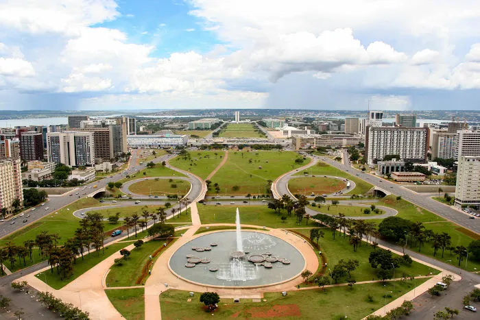

O Distrito Federal, localizado na Região Centro-Oeste e cercado por Goiás, é onde fica Brasília, a capital do Brasil. Criado em 1960, tem cerca de 3 milhões de habitantes e é dividido em regiões administrativas, não municípios. Sua economia é baseada principalmente no setor público e comércio. O clima é tropical de altitude, e Brasília é famosa pela arquitetura modernista. O DF é o centro político do país, abrigando os três poderes da República.
